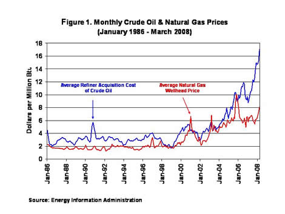
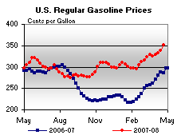

Released on April 23, 2008
(Next Release on April 30, 2008)
The Relationship Between Crude Oil and Natural Gas Prices
We at EIA love a good debate – particularly on issues of energy and prices. Recently, we’ve been trying to figure out: Has a shift or evolution in market forces led to a ‘decoupling’ of crude oil and natural gas prices in the United States?
Proponents of a relationship between crude oil and natural gas prices argue that competitive market forces, especially on the demand side, maintain a relationship between the prices. Oil and natural gas are substitute fuels primarily in the electric generation and industrial sectors. Dual-fired units can burn the less expensive fuel, subject to environmental restrictions. However, potential fuel switching is not limited to dual-fired units. Changes in consumption patterns also occur system-wide based on relative fuel prices, either among units operated by a single company with multiple plants or operated by competitors. The potential to shift consumption based on relative prices would operate to mitigate excessive price differentials between natural gas and oil.
The opposing view questions whether the fuel switching that remains today still can affect the market given that the diminishing number of dual-fired units, on a relative if not absolute level, limits fuel competition at the margin. The increasing tendency for monthly crude oil and natural gas prices to diverge supports this argument (Figure 1). A more stable price difference in the 1990s was broken with a few short-lived periods when prices either diverged sharply or tended to converge. The 1990s crude oil price premium reflected factors like the higher costs of natural gas processing, storage, and transportation, resulting in a lower commodity price for natural gas. Since 2000, natural gas prices occasionally exceeded crude oil prices, but most recently dropped relative to oil to levels last seen in the early 1990s (Figure 2). In recent years, natural gas has sold at a discount to both distillate and fuel oil. Fuel switching towards natural gas is unlikely to be constrained by environmental permit conditions, and was presumably pursued to the maximum extent during such periods, but oil and gas prices still diverged.

The Search for Rules-of-Thumb. Traditionally, analysts who favor a price relation have tried to provide a relatively simple rule-of-thumb to relate oil and gas prices.
One example, based on historical data, is the 10:1 rule, which states that the price of crude oil in dollars per barrel is about 10 times that of natural gas in million Btu (MMBtu). However, the 10:1 rule doesn’t reflect fluctuations in relative prices. For example, from 1986 to 1994, natural gas prices relative to crude oil prices varied from 29 percent to 97 percent (Figure 2). (A 60-percent parity level is equivalent to a 9.7 ratio; close to 10:1.) Market fluctuations may cause short-term deviations from the mean, but as long as the ratio is mean reverting, an analyst can argue that there was a long-term relation of approximately 60 percent from 1986 to 1994. However, the price parity level rose to an average of 68 percent in the last half of the 1990s; equivalent to an 8.5:1 ratio. The 6.9:1 ratio in the early 2000s (84 percent) indicates that perhaps a single ratio can’t do the job.
The ratio of crude oil price per barrel to natural gas in dollars per MMBtu would be approximately 6:1 if prices were based strictly on the thermal content of each fuel. This ratio’s innate appeal is belied by the observation that prices at approximate thermal parity, while increasingly frequent, still are not common. Monthly natural gas prices at 100 percent or more of the crude oil price occurred only 13 times in 2000-early 2008; a rate approximately equal to 3 times every 2 years. Relative prices reached at least 90 percent only 21 percent of the time.
Technical Analyses. Analysts have addressed the issue of a relation between oil and gas prices using statistical techniques on time-series data, with differing results. Certain studies claim that data do not support a relation or support only a weak relation between the prices. Other studies, however, including one by EIA, find that there is a stable, long-term relation between crude oil and natural gas prices. These studies argue that short-term deviations occur, but markets operate to return prices to the long-term trend. Price deviations may be driven by a wide variety of factors, including global oil market fluctuations, extreme weather events, natural gas in storage, and disruptions to natural gas supplies. When these factors are recognized in the analysis, a stable, long-term underlying relationship can be established. These studies find that natural gas prices depend upon crude oil prices, but not the reverse.
According to this view, the two fuel prices are like someone walking a dog on a leash. At any particular time the distance between the walker and the dog may vary, but the distance has a limit and both follow a similar path over time.
So Is There a Relationship or Not? If there is a relationship between crude oil and natural gas prices, it is complex. Certainly people who make rational economic decisions will be motivated to switch fuels at times. However, regardless of motivation, consumers may not have sufficient ability to switch in order to influence prices. The opportunity and the speed to switch are factors that make the price relationship complex. For example, individual customers may be reluctant to switch promptly when adverse prices arise because if the relative prices are not sustained, there will be costs incurred to switch back. If the adverse prices are short-lived, the lowest cost option might be to continue consuming the higher priced fuel for a short period.
Liquefied natural gas (LNG) trade between the United States and foreign suppliers also may support a price relationship. Much of international LNG trade is based on prices tied to crude oil. As the price of crude oil increased strongly this past winter, U.S. LNG imports fell off because (relatively) lower U.S. natural gas prices were not sufficiently competitive to entice LNG towards U.S. terminals. Consequently, preliminary data show that U.S. LNG imports in the first 3 months of 2008 are roughly half of the volumes received in the first quarter of 2007, lowering average daily supplies by more than 1 billion cubic feet (Bcf) per day during the period. The lower natural gas supply in the United States results in upward price pressure, working to restore a long-term relative position of prices.
Conclusion. There isn’t a definitive argument for or against the existence of a stable, long-term relationship between crude oil and natural gas prices in the United States. The issue appears to be different opinions regarding the adequacy of market mechanisms to establish and maintain relative prices at a given level or at least within a limited range. Historical data suggests that there may have been a loose relation between the two price series in the past, but with a widening difference in recent years. Some cite this wider difference as evidence that the prices are now decoupled. However, divergence between the prices in the past may be explainable as the result of variation in a number of market-related variables. If prices remain coupled, we could expect a return to a tighter range of oil and gas prices over the next year or two (absent further strong, exogenous price shocks that would delay or impede the needed market adjustment). We shouldn’t, however, expect the debate to end any time soon.
U.S. Average Gasoline Surpasses $3.50 for the First Time;
Average Diesel Price Again Increases to New Record High
For the fourth consecutive week, the U.S. average retail price for regular gasoline moved higher, setting yet another all-time record of 350.8 cents per gallon. The price shot up by 11.9 cents from last week, an increase more than double the increase of the previous week. On a regional basis, prices increased throughout the country with the largest increases occurring in the East Coast, Gulf Coast, and the Midwest. The average price on the East Coast surged, going up by 14.9 cents to 348.4 cents per gallon, 64.9 cents higher than at the same time last year. The price in the Midwest increased by 11.2 cents to 347 cents per gallon, up by 69.5 cents from a year earlier. The average price in the Gulf Coast shot up by 12.6 cents to 341.1 cents per gallon but still remained the lowest price of any region. The average price in the Rocky Mountains increased to 341.6 cents per gallon, up 9.2 cents from the previous week. The West Coast average price increased the least of any region, moving up by 7.2 cents to 373.4 cents per gallon, 51.6 cents higher than a year ago. The average price in California also increased by 7.2 cents to hit 384.6 cents per gallon.
Once again, the U.S. average diesel price increased to a new record high last week, although the weekly gain was somewhat lower compared with the robust pace reported in the prior week. The U.S. average price increased to 414.3 cents per gallon, up by 8.4 cents compared to the 10.4 cent increase of the previous week. Prices increased in all regions of the country albeit at a slightly slower pace than the previous week. The average price for the East Coast increased to 420.7 cents per gallon, going up by 9 cents compared to the increase of 11.2 cents of the previous week. In the Midwest, the price moved up 8.5 cents to 409.8 cents per gallon. The price in the Gulf Coast increased 7.7 cents to 407.7 cents per gallon and remained the lowest price of any region. The increase in the Rocky Mountain region of 7.2 cents was again the smallest increase of any region. The price there of 411.1 cents per gallon was 113.3 cents higher than a year earlier. On the West Coast, the average price went up by 7.9 cents to 425.5 cents per gallon, 130.2 cents higher than last year. The average price in California increased by 8.3 cents to 431.7 cents per gallon.
Propane Inventories Show Strong Gains
Primary supplies of propane nationwide showed strong gains last week with inventories rising by 2.1 million barrels to an estimated 27.6 million barrels as of April 18, 2008. Nearly all regions reported relatively strong gains last week, leading with the Midwest with a 0.8-million barrel increase, followed by the Gulf Coast that showed inventories up by 0.7 million barrels. Strong imports into the East Coast contributed to boost the region’s inventories higher by 0.6 million barrels last week, while the combined Rocky Mountain/West Coast region remained relatively unchanged during this same time. Propylene non-fuel use inventories showed little change last week but its share to total propane/propylene fell to 7.7 percent from the prior week’s 8.1 percent share.
Text from the previous editions of “This Week In Petroleum” is now accessible through a link at the top right-hand corner of this page.
| Retail Prices (Cents Per Gallon) | |||||||
|  | |||||||
| Retail Data | Changes From | Retail Data | Changes From | ||||
| 04/21/08 | Week | Year | 04/21/08 | Week | Year | ||
| Gasoline | 350.8 | Diesel Fuel | 414.3 | ||||
| Spot Prices (Cents Per Gallon) | |||||||||||||||||||||||||||||||||||||||
|
|||||||||||||||||||||||||||||||||||||||
| Stocks (Million Barrels) | |||||||
 |
|||||||
| Stocks Data | Changes From | Stocks Data | Changes From | ||||
| 04/18/08 | Week | Year | 04/18/08 | Week | Year | ||
| Crude Oil | 316.1 | Distillate | 104.7 | ||||
| Gasoline | 212.6 | Propane | 27.562 | ||||